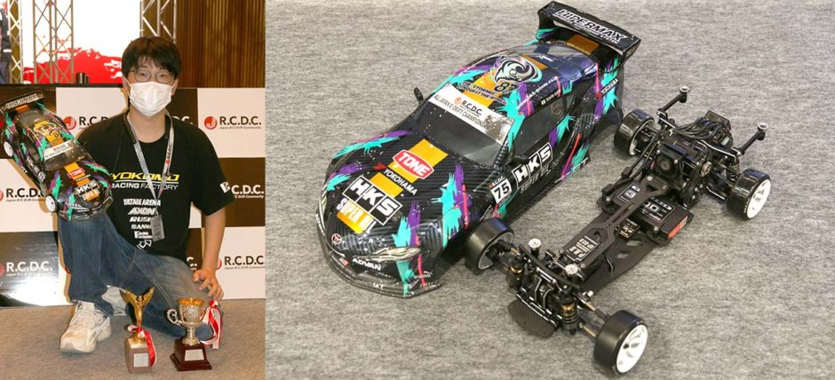

RCDC E-Drift ALL JAPAN NATIONAL CHAMPIONSHIP
結果 単走優勝 総合5位
今年度の集大成 全日本選手権に参加してきました。報告です
今年度は、空港内に特設でサーキットが作られ、カーペットコースで開催されました。

本番の操縦台からの景色
練習していたレイアウトと全く同じだったので、緊張する事なく大会に臨む事ができました。
審査方法
今回の大会は、予選は一人ずづ走行し、ドリフト走行の美しさ、正確さ、パフォーマンスに対して、審査員が得点をつけ、さらに機械審査を取り入れ、正確な審査が行われました。
決勝は二台ずつ走行し、先行、後追いを行い、どれだけ前走と同じ走りを真似できるのか、パフォーマンスを要求されました。
予選の上位三十二名で決勝が行われ、その結果に応じて、総合の結果が決まります。
予選結果(単走審査)

審査は、人間の目線での審査と、走行中のスピード、角度、距離などをカメラで測定し、正確に審査され、得点がつけられました。
審査ジャッチとの相性が非常に良く、今回の全日本選手権では、、
単走優勝を獲得
単走の全日本チャンピオンを獲得する事ができました。
決勝
単走予選のtop32がトーナメント方式の決勝に進みました。
トーナメントを勝ち進みましたが,
best8で敗退。
決勝の順位は予選の結果により、
総合5位で終了

来年は 単走・総合の全日本チャンピオンを獲得します！
ちょっと悔しいので、報告は以上です。。。。。。。。。。